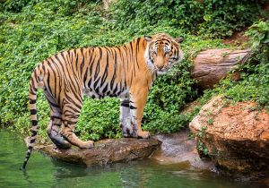
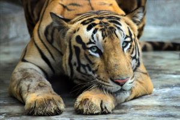

Latest News

New study confirms the importance of tiger population in Thailand forest complex
This is a longer card with supporting text below as a natural lead-in to additional content. This content is a little bit longer.
Predictive AI is the newest weapon in the battle to protect endangered animals
This is a longer card with supporting text below as a natural lead-in to additional content. This content is a little bit longer.
How advancements in DNA technology can help save the tigers
This is a longer card with supporting text below as a natural lead-in to additional content. This content is a little bit longer.

Tiger Bones and Rhino Horns Are No Longer Banned for Medicine in China
This is a longer card with supporting text below as a natural lead-in to additional content. This content is a little bit longer.